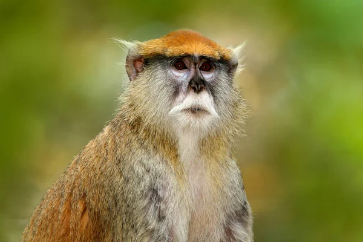
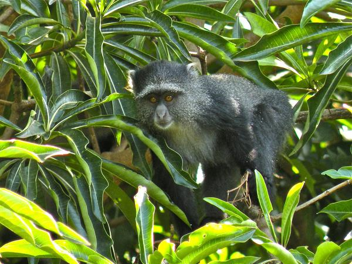

.jpg)
В чем разница между приматами и обезьянами? главной особенностью, отличающей обезьян от низших приматов, да и от всех остальных животных, является не строение зубов и не расположение глазниц, а относительно большая величина их мозга.
Патас, красная обезьяна (Erythrocebus patas) Относятся к Широконосым обезьянам, или обезьянам Нового Света, то есть Центральной и Южной Америки. Обитают в Бразилии, Перу, Панаме, Колумбии. Мелкие обезьяны, длиной 25-35 см, хвост длиннее тела. Масса взрослого самца 0,5-1,2 кг, самки 0,3-0,7 кг. Питаются, в основном, растительной пищей, фруктами, орехами, ягодами, а также насекомыми и мелкими животными. 
Голубая мартышка (Cercopithecus mitis) Обитают в Африке – в Эфиопии, Заире, Анголе и дальше к югу. Небольшие обезьяны, длиной 32-52 см, хвост длиннее тела. Масса взрослого самца 4,5 кг, самки 3-3,5 кг. Общий тон шерсти – сизо-серый, «голубой», на макушке чёрная «шапочка». Живут в вечнозеленых, влажных лесах с бамбуковым подлеском. Предпочитают, чтобы вода была близко. Питаются фруктами, злаками, ягодами, молодыми побегами, ветками (вместе с корой), насекомыми, яйцами птиц, мелкими позвоночными.
Павиан анубис (Papio anubis)
Обитают на обширной территории Африки по обе стороны экватора, значительно шире, чем гамадрилы. Наиболее крупные из Низших обезьян: длина тела (без хвоста) достигает 1 метра. Хвост 50-80 см, с кисточкой. Масса взрослого самца до 35 кг, самки значительно меньше, 18-22 кг. Шерсть тёмно-бурая, с зеленоватым оттенком. Мантия у самцов – тёмная, может совсем её не быть. Лицо тёмное.
У самцов хорошо заметны большие клыки, которые сравнимы с клыками леопарда.
Всеядные животные, помимо растительной пищи, ловят не только насекомых и мелких животных, но и зайцев, детёнышей газелей и даже зелёных мартышек.
Капуцины (Cebus spp.)
Относятся к Широконосым обезьянам. Обитают на довольно большой территории Южной Америки, от Гондураса до юга Бразилии.
Длина тела 32-57 см, хвост примерно такой же длины, хватательный. Размеры самцов и самок примерно одинаковы. Мощные клыки как у самцов, так и у самок.
Преимущественно тёмная, окраска с различным у разных видов расположением светлых отметин. Питаются фруктами, ягодами, молодыми побегами, насекомыми, яйцами птиц, мелкими позвоночными. Хорошо дрессируются, часто «играют» в художественных фильмах.